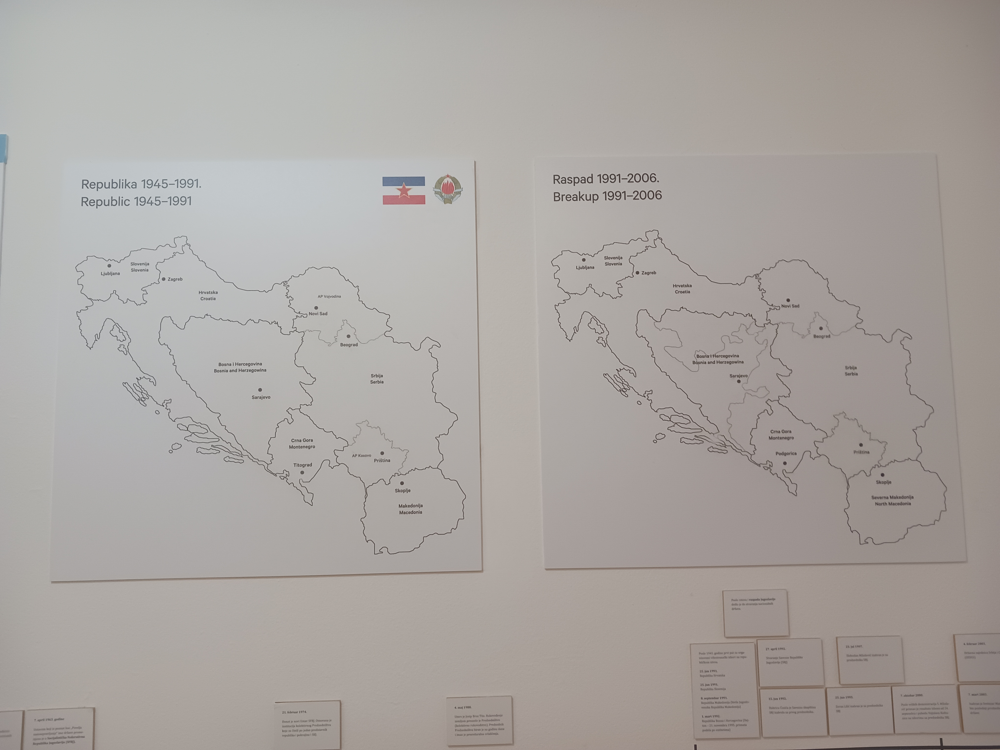

Follow along with me on my travels through several Balkan states in April 2025. The exact geographical boundaries of this region are up for debate, but the cities I visited are generally considered to be part of the region.
If you're here for pictures, head to one of the other tabs. If you're here for lukewarm post-trip takes, keep reading.
Going into this trip, I was worried about how US travelers would be received given the number of unforced errors the US government is threatening to inflict on the global economy, but I needn't have worried - I only talked about US politics with other tourists (and my very online Belgrade Airbnb host). This is unsurprising in retrospect, but locals may not be paying as close attention to the situation in the US because they have their hands full dealing with their own struggles.
On that note, during this trip I realized there are some common pain points in the countries I visited, including:
One of the biggest issues in the Balkans right now is brain drain, both domestically (citizens migrating from rural areas to major cities) and internationally (citizens relocating to other European countries in search higher pay and more opportunities). Young people (under 35) and professionals (nurses, software developers, etc.) in particular are leaving in droves due to an overt lack of meritocracy in the workforce. It's sad to see given the region has so much to offer regarding culture, food, and tourism opportunities.
Not to say things are much better where I live - this is more commentary on some of the common struggles faced by people all over the world today, along with worldwide demands for governments to do better by and for their citizens.
There are a lot of commonalities in the Balkans, especially linguistically. Many countries use the Cyrillic writing system — for anyone who speaks Russian, local Slavic greetings will sound very familiar. See/listen for yourself:
Albanian is a notable exception (the language is very different from its neighbors - one tour guide said it's "because they live in the mountains"), but in general most Slavic languages are at least somewhat mutually intelligible. I also didn't notice much physical difference between different ethnic groups (though I'm told Montenegrins are noticeably taller than other Balkan citizens).
All that to say, it's interesting how, even among populations with a lot in common ethnically or culturally, humans always come up with a way to construct a social hierarchy among them (often through nationalism in the case of Yugoslavia). These kind of groupings can serve as a way to acknowledge the shared humanity and experiences of a certain subset of people, but they can also be manipulated to drive a wedge between different groups.
Hard to say — I had a wonderful time, but things could look very different in the future as demographics and opportunities shift. Each experience is inherently ephemeral due to its unique place in time (e.g., there will only be one April 2025), and certain aspect of my trip may not be repeatable in the future, especially if the levels of brain drain and government corruption remain unchecked (though I'm in no position to throw stones since things aren't great here either).
I'll be keeping an eye on regional politics and rooting for empowered citizens who demand change for the better, both in the Balkans and at home.
*These are my general thoughts based on several one-off tours - they are in no way meant to accurately represent the history of communism and Yugoslavia. Take these casual opinions with several grains of salt and do your own research.